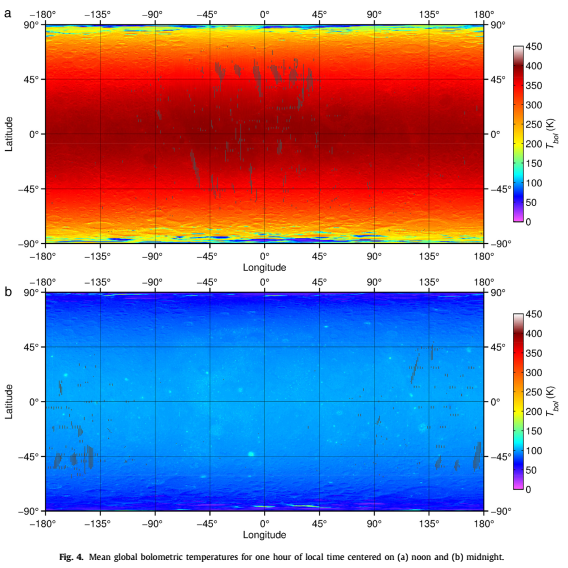
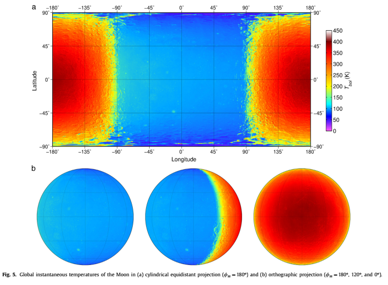

Planetary Climate
Zero-dimensional Model
Energy Source/Sink
\[ R_i \to \]

\[ R_o \to \]
Energy balance
\[ R_s \to \]
\[ \leftarrow \alpha R_s \]
\[ R_p \to \]
\[ R_s = ?,\ R_p = ?,\ \alpha = ? \]
Energy balance
\[ R_s \propto \sigma T_s^4\]
\[ R_p = \sigma T_e^4 \]
\[ T_e = ?,\ \alpha \propto ? \]
\[ T_e = T_{surf},\ \alpha = \alpha_{surf} \]
$\frac{S(1 - \alpha_{surf})}{4} = \sigma T_{surf}^4$
Moon Local Temperature

Williams et al., Icarus 2017
Day/Night Changes

Williams et al., Icarus 2017
Shell Model
- How much is radiated?
- From where is it radiated?